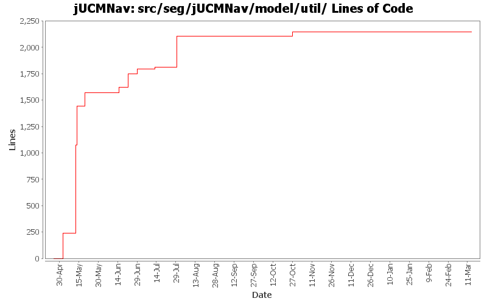

Summary Period: 2005-04-25 to 2006-03-13
[root]/src/seg/jUCMNav/model/util
 modelexplore
(7 files, 251 lines)
modelexplore
(7 files, 251 lines)
 queries
(6 files, 726 lines)
queries
(6 files, 726 lines)

Total Lines Of Code:
2145 (2006-03-31 18:01)
| Author | Changes | Lines of Code | Lines per Change |
|---|---|---|---|
| Totals | 92 (100.0%) | 2145 (100.0%) | 23.3 |
| jkealey | 48 (52.2%) | 2107 (98.2%) | 43.8 |
| jfroy | 34 (37.0%) | 38 (1.8%) | 1.1 |
| jpdaigle | 6 (6.5%) | 0 (0.0%) | 0.0 |
| etremblay | 4 (4.3%) | 0 (0.0%) | 0.0 |
Added extension point for the Strategy algorithms
0 lines of code changed in:
Externalize String
0 lines of code changed in:
invalid class was used.
0 lines of code changed in:
Added feedback in UCM for URNlinks
0 lines of code changed in:
Fixed problem resolving name conflict during import
0 lines of code changed in:
Added URNlink dialog, actions and commands
0 lines of code changed in:
bug 408: new perspective; it is opened with new file; created default view/new wizard shortcuts
0 lines of code changed in:
Ended name change.
0 lines of code changed in:
Name change for EvaluationScenario (now called Strategy)
0 lines of code changed in:
Fixed contribution evaluation propagation
0 lines of code changed in:
Fixed problem when user change an evaluation value from an element with destination links
0 lines of code changed in:
bug 402 - autolayout of GRL diagrams
0 lines of code changed in:
Added:
-Delete commands for scenario and evaluation
-Delete action for evaluation
Fixed:
-NullPointer exception with scenarioView (in property view)
-Adding new elements in model when in scenario view
-Contribution and decomposition refresh
-Dispose labels in IntentionalElementEditPart and LinkRefEditPart
0 lines of code changed in:
Added evaluation labels in evaluation scenario view.
0 lines of code changed in:
Added scenario author, color modification when scenario selected and fixed NullPointerException in Scenario view when closing the editor.
0 lines of code changed in:
Added contribution evaluation
0 lines of code changed in:
Evaluation scenario view added.
0 lines of code changed in:
Fixed bugs 400, 401, 403 and 404
- Added GRL export as images
0 lines of code changed in:
Merge of GRL branch with the main trunk
0 lines of code changed in:
Created a URN Import extension point and related wizard. currently very simple, but sufficient for the use case to use case map conversion utility which will be packaged seperately.
Various other small modifications to import/export/autolayout extensions/wizards.
0 lines of code changed in:
(36 more)
Generated by StatCVS 0.2.4